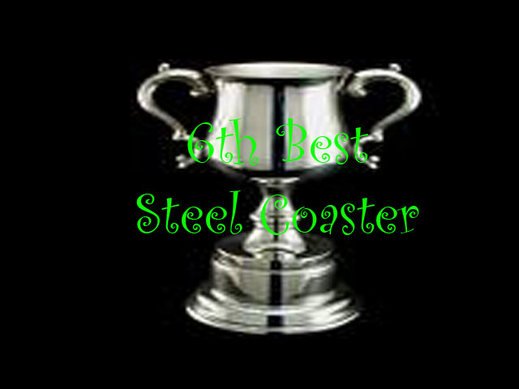

| |
Iron Gwazi Review

Today at Incrediblecoasters, we're going to be reviewing Iron Gwazi at Busch Gardens Tampa. Now this is a Rocky Mountain Makeover, where they take an old busted sh*tty wooden coaster and turn it into a kickass crazy steel coaster. Now you know me. I love the RMCs. They're all great rides. Even the worst ones are still pretty damn good. But this isn't just another RMC conversion. Nope, this is a REALLY HIGH QUALITY one. True, it's not my favorite RMC as I can think of two better ones. But regardless, Iron Gwazi is still an AMAZING ride and something that REALLY deserves all the love and praise it gets from other enthusiasts. So yeah. Let's hop on and see just how great this ride is. We hop in the trains, buckle the seatbelt, pull down the lap bar, and off we go! We go around a small turn, down a small dip, and begin climbing up the lifthill. Yeah. Iron Gwazi actually neglects to have a fun little pre-lift section that's a lot of fun and a staple on most RMCs. Mild bummer since I really like those pre-lifts (Perhaps that could be a future Top 10 List). But no need to dwell on that, because Iron Gwazi is genuinely an amazing ride. Let's focus on that. We climb the lifthill, getting a great view of Busch Gardens Tampa. We soon reach the top, and yeah. The view is great since.....this is technically a hyper RMC. And that means we have a hyper coaster first drop. HOLY F*CK!!! THIS FIRST DROP IS GREAT!!! Not only is it a hyper coaster drop, but it's also a VERTICAL DROP as well (technically beyond vertical since its 91 degrees, but you genuinely can't tell the difference between 90 and 91 degrees)!!! So this thing yanks you out of your seat, gives some nice ejector air in the back, and POURS ON THE SPEED!!! Honestly, out of all the RMCs I've done, I think I have to give Iron Gwazi the award for best first drop on any RMC. This is that great of a first drop. Coming out of such an amazing first drop, we head up into giant airtime hill. Except this is an RMC. So of course, this isn't just any ordinary airtime hill. It's an outward banked hill. And GOD DAMN!!! THIS THING IS MASSIVE!!! Seriously, you just rise up into this giant curved hill, that not only feels like its going to become an inversion, but this hill ALONE is bigger than MANY RMCs. And of course, right at the top, it just immedietly starts banking the other way, providing both a nice pop of airtime, but on top of that, you also get the freaky outward banking feeling you get on so many RMCs. You then bank back into the normal direction and drop back down to the ground, gaining a ton more speed. Yeah. Iron Gwazi is a FAST RMC and you REALLY feel the speed on this one. We then head up into another giant curved hill. Nothing special so far. Just going fast and out of control. And here, we come to one of the signature moments of the ride. The Death Roll. And.....I'm not gonna lie. I was let down by this part of the ride. I expected the Death Roll to be this truly crazy HOLY SH*T try to murder you element. It's a great element. It's basically a barrel roll drop. And those are a TON of fun. I LOVED these on other RMCs, such as Twisted Timbers, Wind Chaser, and Medusa Steel Coaster. And yeah. I LOVED it here. It was a really fun element. But it didn't try to kill me in a way like I expected from the airtime on Skyrush, the Mosasaurous Roll on Velocicoaster, or so much of Arie Force One. But while the Death Roll itself didn't live up to my sky-high expectations, it's still an AMAZING element, has a TON of force, and there's PLENTY more awesomeness of Iron Gwazi to ride through. We then roar through another overbanked hill, which does provide another nice pop of airtime, as well as some whip. Cause Iron Gwazi really is that crazy of a ride. And then we come into what is my favorite part of the ride. The Wave Turn. This is an element that upon looking at it, it doesn't seem like anything special. It's just a banked airtime hill. Yeah. It's a banked airtime hill. But a couple things about this Wave Turn. A: It's banked 90 degrees. So it's completely sideways. B: IT'S SUPER STRONG EJECTOR AIR!!!! I know I've salivated over sideways airtime in other coaster reviews, but THIS!!! THIS IS SIDEWAYS HYPER-STRONG EJECTOR AIR!!! HOLY F*CK!!! If anything, THIS feels like the moment that tries to kill you. It's my favorite part of Iron Gwazi, and......IT'S JUST SO DAMN GOOD!!! We then head up into another airtime hill. Yeah. Another moment of ejector air. We head into a banked turn, going through another wave turn. Except this one doesn't have the same level of HOLY SH*T airtime. We then head into another inversion. A little mini Zero-G Stall. These are usually big drawn out elements to give you sustained moments of hangtime, to really emphasize the fact that you are upsidedown. But this one......it's so small that it doesn't really have that feeling. It really just feels like a quick moment where it flips you upsdiedown, keeps you there, before just flipping you back rightside up. It's not so much a hill as much as just......a way to flip you upsidedown. Almost like a barrel roll, only with an extended moment of it being upsidedown. So you get some whip, a little hangtime, only to whip back around. Once again, another solid inversion from RMC. We then head up a banked incline (very non-steep hill), before going into a banked turn. This turns into half of an upward helix, before going into another banked airtime hill. And BAM!!! MORE EJECTOR AIR!!! We then drop back down, going into another banked turn, before going up into a small airtime hill. Go out of the seat, and DAMN!!! Bigger drop down to the ground, giving us some nice speed! We then head up a curved hill, and sadly, we glide right into the brake run. Yeah. The one downside of Iron Gwazi is that.....this is one of the shorter RMCs. Which is a real shame because GOD DAMN!!! THIS IS A POWERFUL ONE!!! IT'S JUST SUCH A GREAT RIDE!!! No matter how badly United Parks is treating Busch Gardens Tampa and the other parks (that genuinely makes me sad because the park is truly something special), Iron Gwazi is so great that it still makes the park stand out and puts it on the map as a Florida priority. This truly is an amazing coaster (FAR BETTER than the original Gwazi). If you find yourself at Busch Gardens Tampa, GET ON IRON GWAZI!!! If you find yourself in Florida, GET ON IRON GWAZI!!! It TRULY is a great ride and one of the finer creations from RMC.
10/10
Location: Busch Gardens Tampa
Opened: 2022
Built by: Rocky Mountain Coasters
Last Ridden: August 20, 2025

Iron Gwazi Photos


Home
|